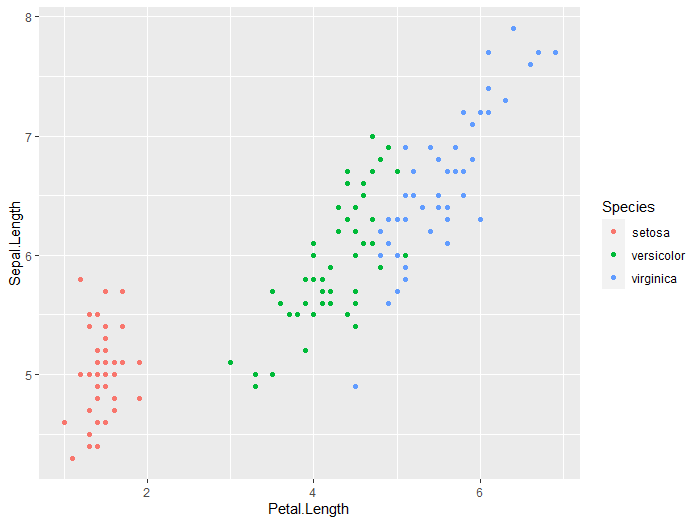

Introduction to ggplot2
What is ggplot2?
ggplot2 is based on a grammar of graphics: “a tool that enables us to concisely describe the components of a graphic” 1
This allows us to build complex graphical representations of our data from consistent, essential building blocks.
Once you understand the logic and grammar of ggplot, you can create almost any kind of plot you might need.
The basic structure of ggplot code is as follows:
ggplot(aes(x, y), data) + #specifying your axes, data
geom_--- + #indicating the type of plot, e.g geom_scatter, geom_line, etc.
additional geoms + #layering types of plots
thematic arguments #a number of arguments to modify theme/aesthetics
Making the plots pretty
In general, the best strategy to make plots is to get the bare bones plot, then add aesthetic parameters one at a time. That way, you know what causes errors if (likely when) they arise.
Example plot building workflow
Just watch for this section. The rest of the workshop is all practical, coding along exercises.
1 - Make the bare bones plot
ggplot(aes(x = Petal.Length, y = Sepal.Length), data = iris) +
geom_point()
::: {style=”margin-left: 5%; margin-top: 20px; margin-bottom: 40px”}  :::
:::
2 - Make more major aestetic changes
By major changes, we mean adding completely new parameters, like the color argument added in the aes section
ggplot(aes(x = Petal.Length, y = Sepal.Length, color=Species), data = iris) +
geom_point()
::: {style=”margin-left: 5%; margin-top: 20px; margin-bottom: 40px”}  :::
3 - Make more minor aestetic changes
These changes modify parts of your plot that already exist. Here, we are modifying the color or the points, adding a title to the plot, and changing the plot background.
ggplot(aes(x = Petal.Length, y = Sepal.Length, color=Species), data = iris) +
geom_point(cex=3) + ## change point size
labs(x = 'Petal length (cm)', ## add labels
y = 'Sepal length (cm)',
title = 'Petal length vs sepal length of irises')+
scale_color_manual(values=c("magenta", "purple", "blue"))+ ## change point color using colors from https://htmlcolorcodes.com/color-names/
theme_minimal() ## set a pretty background theme
::: {style=”margin-left: 5%; margin-top: 20px; margin-bottom: 40px”}  :::
:::
-
Hadley Wickham. 2010. A Layered Grammar of Graphics. Journal of Computational and Graphical Statistics 19(1):3–28 ↩